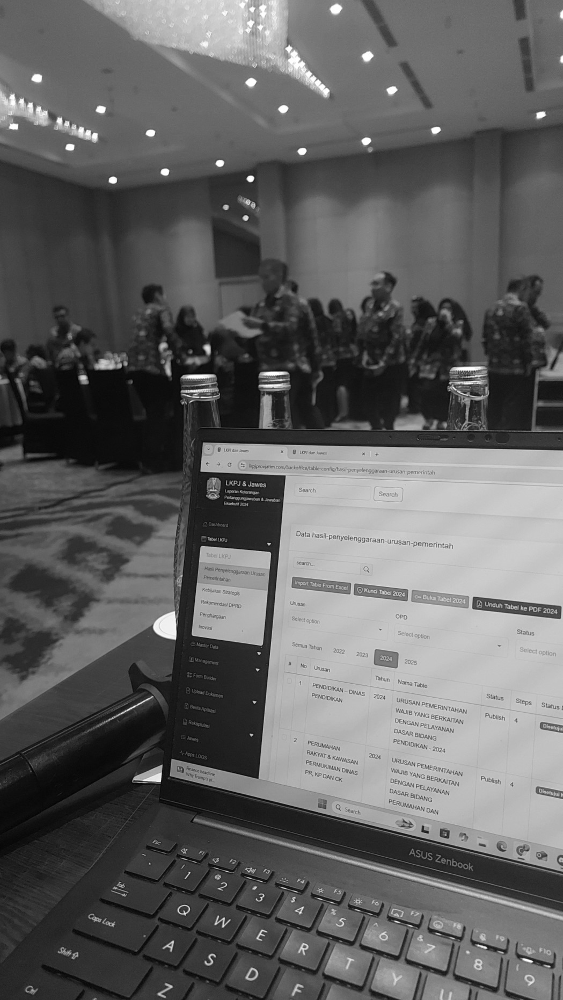
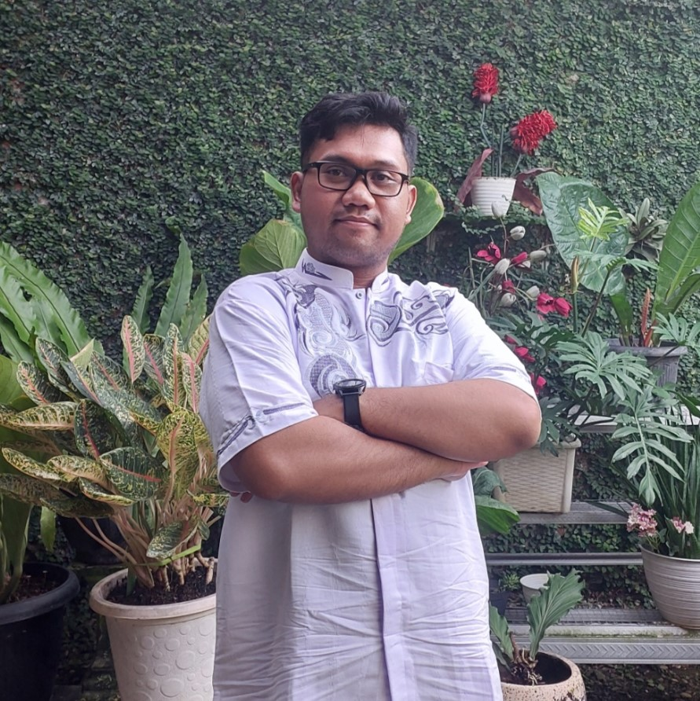
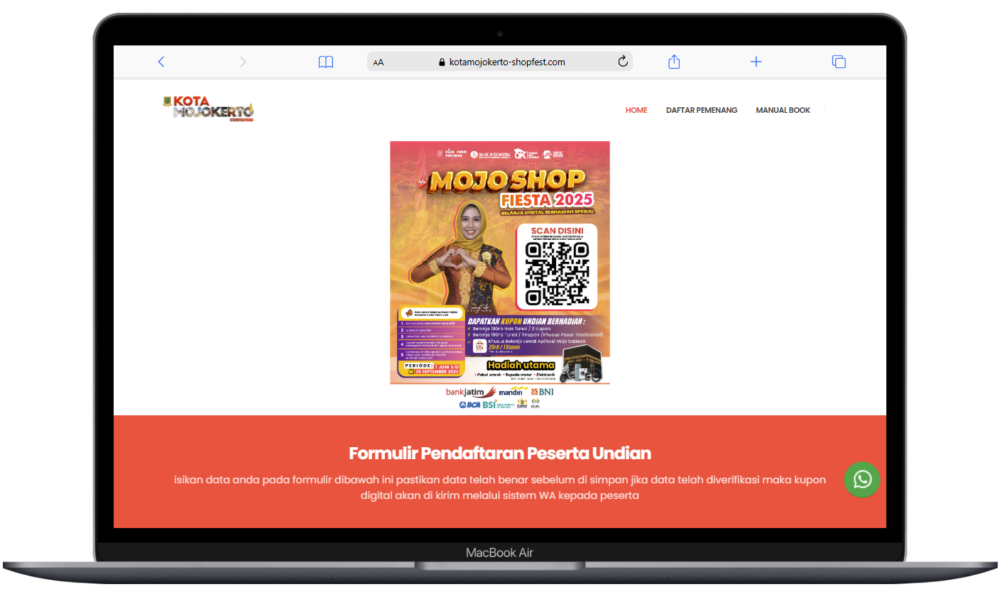
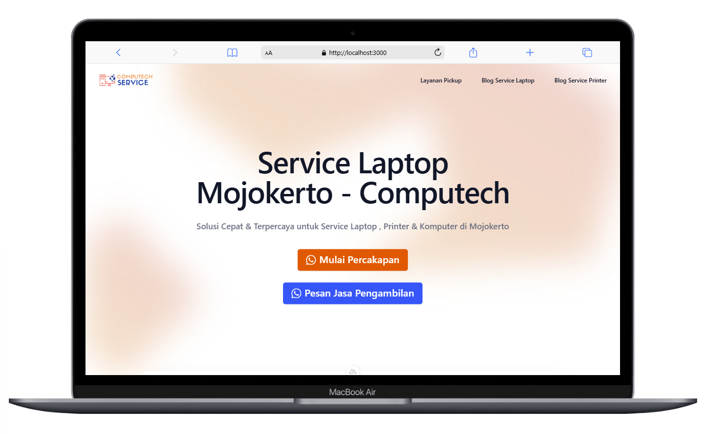
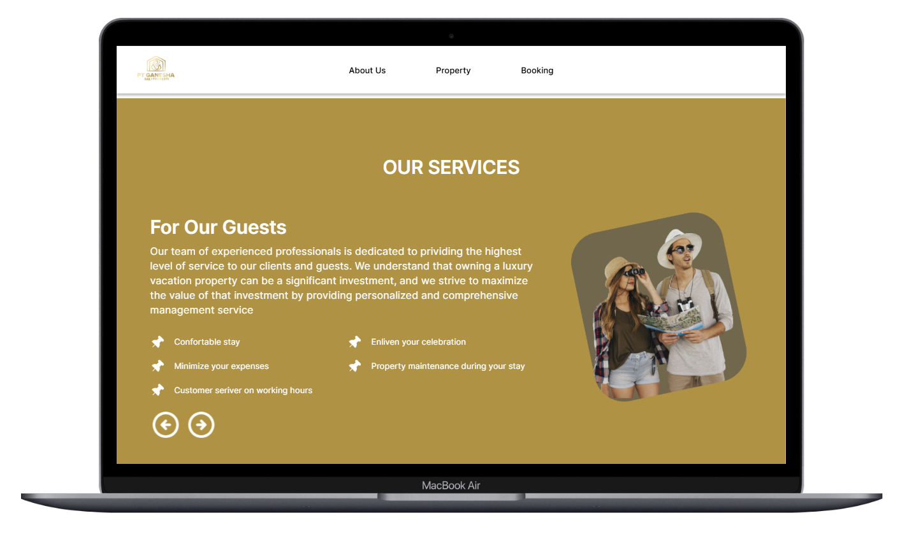
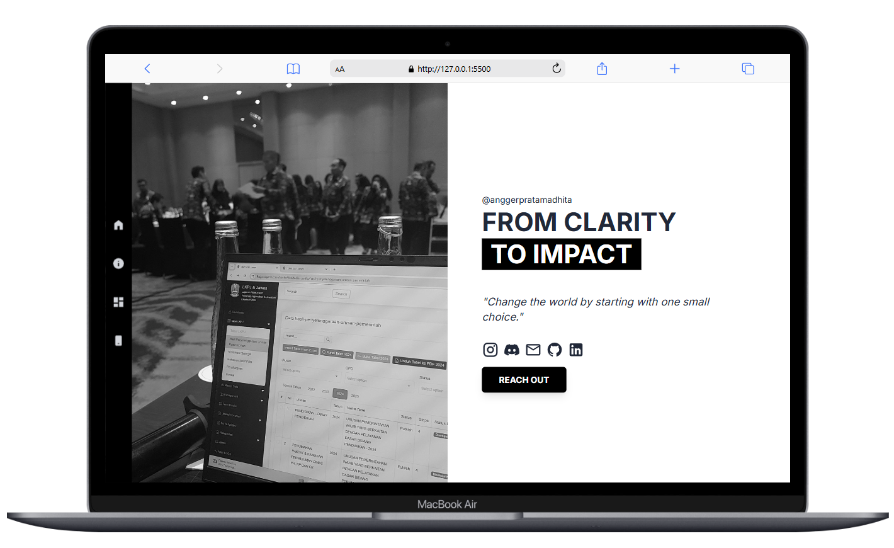
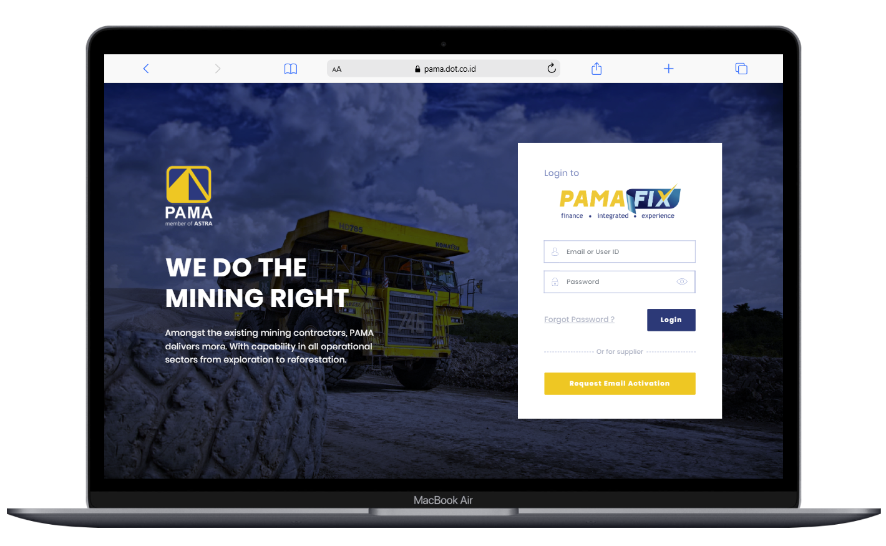
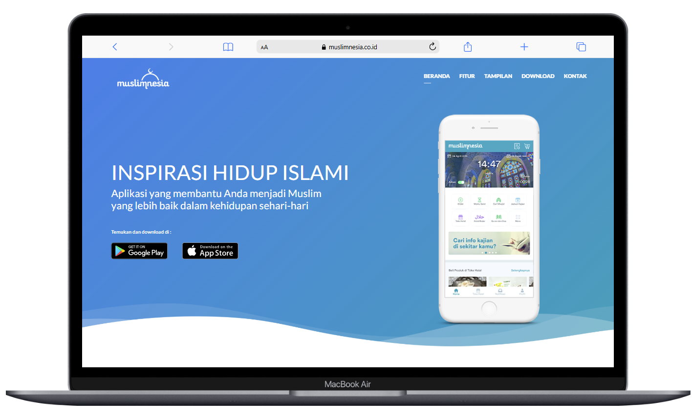

Full stack developer · Indonesia
From clarity
to impact.
Hi, I’m Angger. I turn complex ideas into thoughtful web experiences. Built with care, from the first line of code to the final detail.

Ideas into the real world.Good code. Clear purpose. Lasting impact.
Scroll to discover01 / Selected projects
Work with purpose.
Real challenges. Thoughtful solutions.
A selection of what I’ve built.

E-LKPJ
Bringing clarity to government performance reporting across East Java.
Explore the project
SIMASKER
Connecting institutions through simpler, more adaptable collaboration workflows.

Mojosadean
A digital home for local businesses. Built for the people of Mojokerto.
02 / The person behind the work

Developer. Problem solver. Always learning.
A developer’s mind.
A craftsman’s approach.
I believe the best digital experiences start with understanding the people who use them.
I’m Angger Pratamadhita, a full stack web developer based in Indonesia. I build web applications from concept to deployment, bringing intuitive interfaces and dependable backend systems together.
My work spans public-sector platforms, local commerce, and business websites. I care about clear thinking, maintainable code, and the small details that make something feel right.
Outside of work, you’ll usually find me gaming, exploring something new, or thinking about the next thing to build.
Say helloTools of the trade
Interface
Nuxt.js / TypeScript
JavaScript / Bootstrap
Behind the scenes
Node.js / Express.js
PHP / Laravel / C# .NET Core
Data & architecture
PostgreSQL / MySQL / MongoDB
MS SQL Server / REST APIs
03 / Along the way
A little background.
Different roles. One constant:
making things work better.
Jun 2023 — PresentTechnology LeaderPT Ronin Diginara Indonesia · Freelance
Guiding technical direction across web projects, from architecture and code quality to deployment. Collaborating with teams, mentoring developers, and building scalable solutions.
Visit company
Jun 2022 — PresentFull Stack Web DeveloperIndependent · Freelance
Designing and developing complete web applications with Node.js, TypeScript, modern JavaScript frameworks, and SQL and NoSQL databases. From business websites to scalable applications.



Jul 2021 — Oct 2025Electronics Repair Shop OwnerComputech Mojokerto
Established and managed a local electronics repair business. Diagnosed hardware and software issues, repaired computers and printers, and supported businesses and individuals while managing customer service, inventory, and daily operations.
Visit ComputechApr 2019 — Sep 2021Backend DeveloperDOT Indonesia
Built RESTful APIs and backend systems with Laravel and MySQL, integrated third-party services, and optimized database queries. Also worked with C# .NET Core and MS SQL Server for enterprise applications.
Visit company
Jul 2018 — Sep 2018Intern Backend DeveloperDOT Indonesia
Started my professional journey building and maintaining Laravel applications, developing RESTful APIs, and supporting database design alongside senior developers.

04 / A conversation is a good start
Have something
in mind?
↗A project, an idea, or just a hello.
I’d love to hear from you.